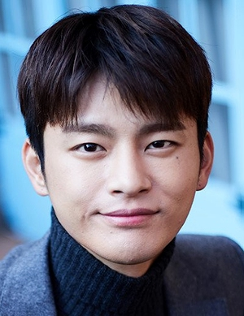

It is a South Korean drama starring Seo In-guk, Nam Ji-hyun, Yoon Sang-hyun and Im Se-mi. It aired on Wednesdays and Thursdays at 22:00 (KST) on MBC from September 21 to November 10, 2016.
Scene Photo
Movie Info
A romantic comedy about Louis (Seo In-guk), a rich heir who always spends money to buy everything that has a subtle beauty talking to his soul. One day he loses his memory and meets Bok-Shil (Nam Ji-hyun), a pure and energetic woman from the countryside. She is at first astounded by his spending habits. In the process of teaching him to only buy bare necessities or inexpensive small kindnesses that lighten up one's day, she also learns that bare necessities are not same for everyone as they depend on everyone's own values that shape their life and thus their shopping patterns. Both have innate innocence which bring them to care for each other, leading to undeniable love.
- Genre:Romantic comedy
- Director:Lee Sang-yeob
- Writer:Oh Ji-young
- Original Release: September 21 –November 10, 2016
- No. of Episodes: 16 Episodes
Cast
 Seo In-guk as Louis / Kang Ji-sung ( 25 Years Old )The last surviving heir of a chaebol chairman. Having grown up in a sheltered and pampered environment in France, he turns to retail therapy to curb his loneliness. One day, he finds himself dropped into the bustling Seoul after having lost his memory.
Nam Ji-hyun as Ko Bok-shil ( 21 Years Old )A country bumpkin from the Gangwon Province, who has a sweet personality. Though she is illiterate with technology, Bok-shil is quick on her feet and adapts well to situations.
Yoon Sang-hyun as Cha Joong-wonThe director of Gold Group's merchandising department and Goldline.com. He has a prickly personality and is Louis's rival in love.
Im Se-mi as Baek Ma-riLouis' childhood friend, who has a one-sided love for him because of his title. She later falls for her boss, Joong-won.
Production
- Executive producer(s):
- Kim Ho-joon
- Producer(s):
- Kim Ho-joon
- Cinematography(s):
- Hwang Sung-man
- Song Gab-young
- Editor(s)
- Kim Na-young
The series held the record First script reading took place July 15, 2016 at MBC Broadcasting Station in Sangam, South Korea and filming began on July 18. The series was based on Oh Ji-young's romantic comedy script which won the Excellence Prize in the 7th Broadcasting Foundation Scenario Contest (7회 드라마극본공모전 사막의별똥별찾기), hosted by the Broadcasting Contents Promotion Foundation in 2015. Despite the common material, ranging from amnesia to corporate heirs, the drama's storyline got praises from both fans and critics. The filming location used for Louis' Castle in the first episode is the Château de Bourron near Paris in France.